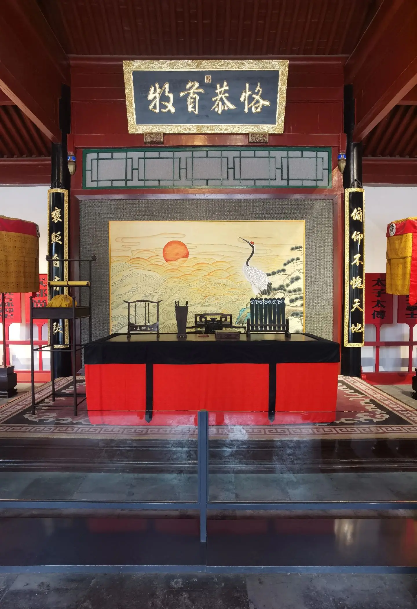

剧情概览
清咸丰年间，走马古镇连日阴雨。城东张氏报案，称邻家妇人深夜潜入她家菜园，盗走十二枚南瓜。被告刘氏哭天抢地，称自家瓜藤本就攀过墙头，几枚南瓜原属己有，反被张家诬陷。
知县升堂，证词反复，邻人各有立场。一根藤上的瓜，到底属于谁？这背后，又是否藏着更深的恩怨纠葛？
你将以"师爷"身份，在驿馆、公堂、市集之间收集线索，盘问证人。三炷香的时间内，给出你的判词。
清咸丰年间，走马古镇连日阴雨。城东张氏报案，称邻家妇人深夜潜入她家菜园，盗走十二枚南瓜。被告刘氏哭天抢地，称自家瓜藤本就攀过墙头，几枚南瓜原属己有，反被张家诬陷。
知县升堂，证词反复，邻人各有立场。一根藤上的瓜，到底属于谁？这背后，又是否藏着更深的恩怨纠葛？
你将以"师爷"身份，在驿馆、公堂、市集之间收集线索，盘问证人。三炷香的时间内，给出你的判词。
Suspect Files
新到任的青年知县，性情急躁，急于立威。一桩小案，却怎么也审不明白。
城东老户，菜园主人。声称丢失南瓜十二枚，言辞激烈，证词却存在时辰矛盾。
张家邻居，寡居多年。当夜确曾出门，为何偏偏走到张家菜园后墙？
古镇茶馆老板，雨夜替人挡雨，看见一个身影从墙边匆匆而过。可那身影，到底是谁？
路过古镇借宿驿馆的外乡书生。话不多，却说了一句关键时辰，反而把所有人卷进谜团。
新任师爷，今夜代知县出堂理事。一根藤、十二枚瓜、四五口供——真相，全靠你来拼。
Timeline of Clues
古镇当夜大雨倾盆。张氏屋后菜园泥泞，瓜藤受雨打而断。
张氏自称此时听到墙外动静，但邻舍说，张家东屋油灯此刻才熄。
王掌柜送酒归来，看见一个披蓑衣的人影从墙边匆匆走过，方向却不对。
刘氏家门前发现两枚滚落的南瓜，瓜上沾泥，断口却干净得不像被人砍下。
张氏举着断藤至刘家门前喊骂，惊动四邻，闹至公堂。
知县升堂，原告、被告、证人各执一词；师爷你受命彻查，三炷香内定案。
Immersive Scenes
瓜藤随雨低垂，泥水裹着碎叶顺着墙根流过。蓑衣脚印？瓜蒂断口？被风掀起的鸡笼？这堵墙，把两户人家分成了两个故事。
调查环节中，你可以选择"夜访菜园"、"摸排门户"、"翻看落瓜"，不同动作触发不同线索。

师爷立于堂下，原被告面前一束香三炷。时辰一过，便须给出判词。每一次盘问、每一次对质，都会消耗时间，也会撕开新的破绽。
你可以让证人对质、出示证物、调阅卷宗——但小心，错引一句，便是另一种结局。
本剧本推荐 5 人开局：知县、原告、被告、二证人各一，外加师爷主角。
建议预留两小时整。其中读本 30 分、调查 60 分、定案 30 分。
建议提前换上素色长衫或汉服，关闭现代设备提示音，全程以角色身份对话。